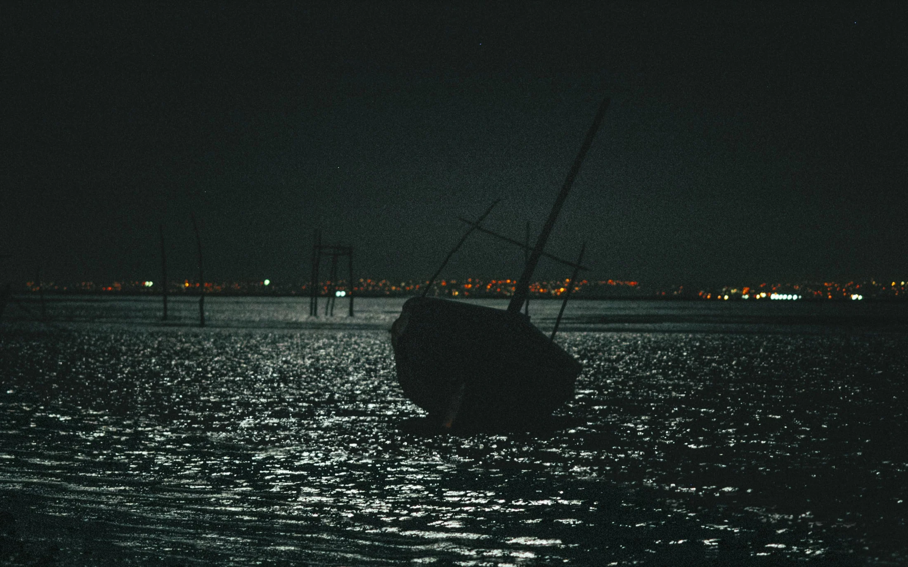
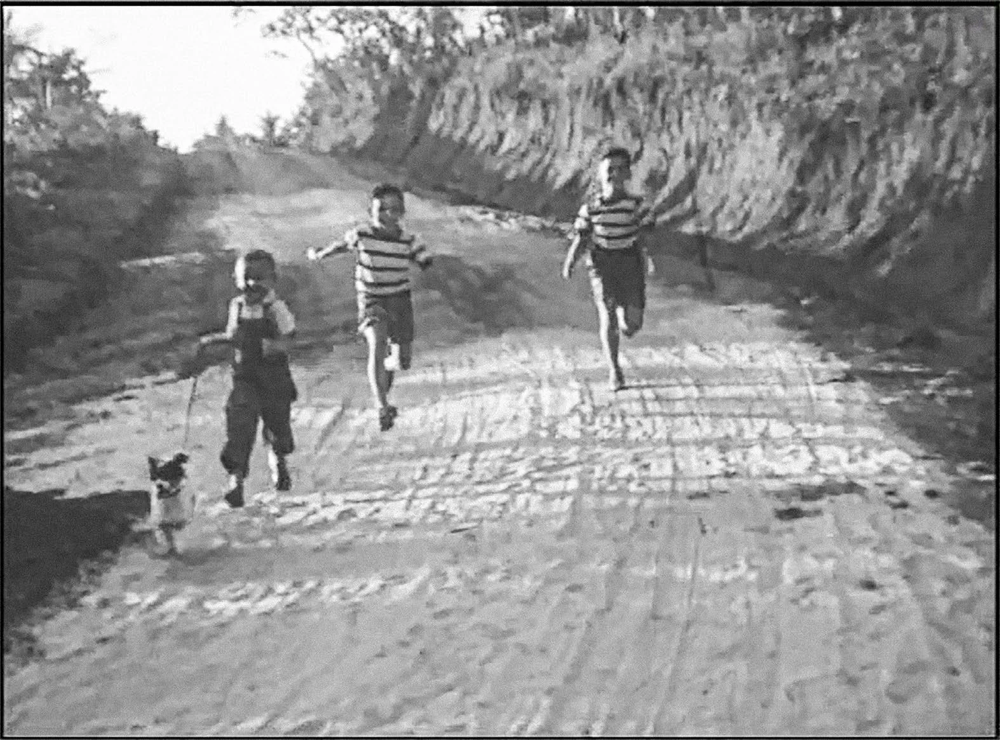
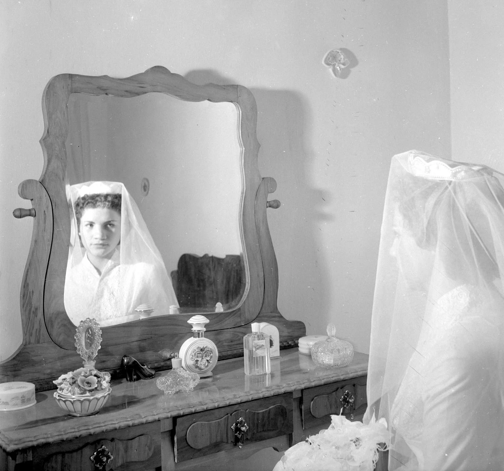
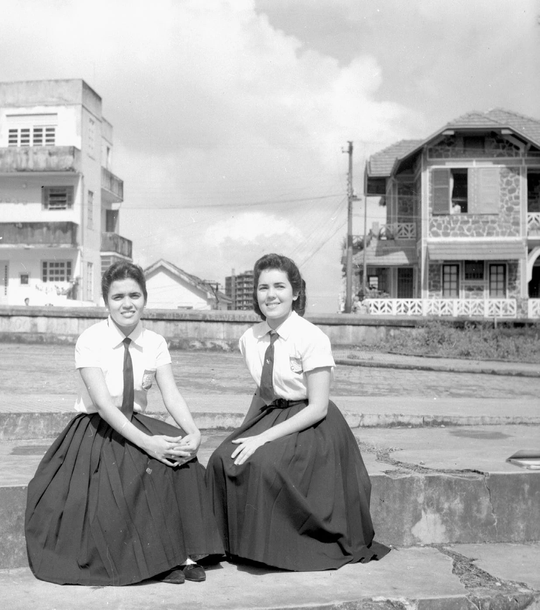
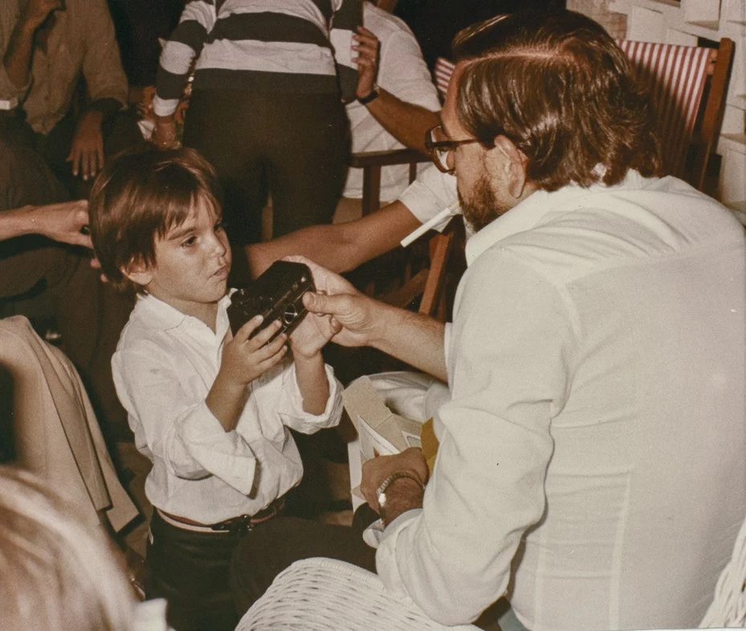
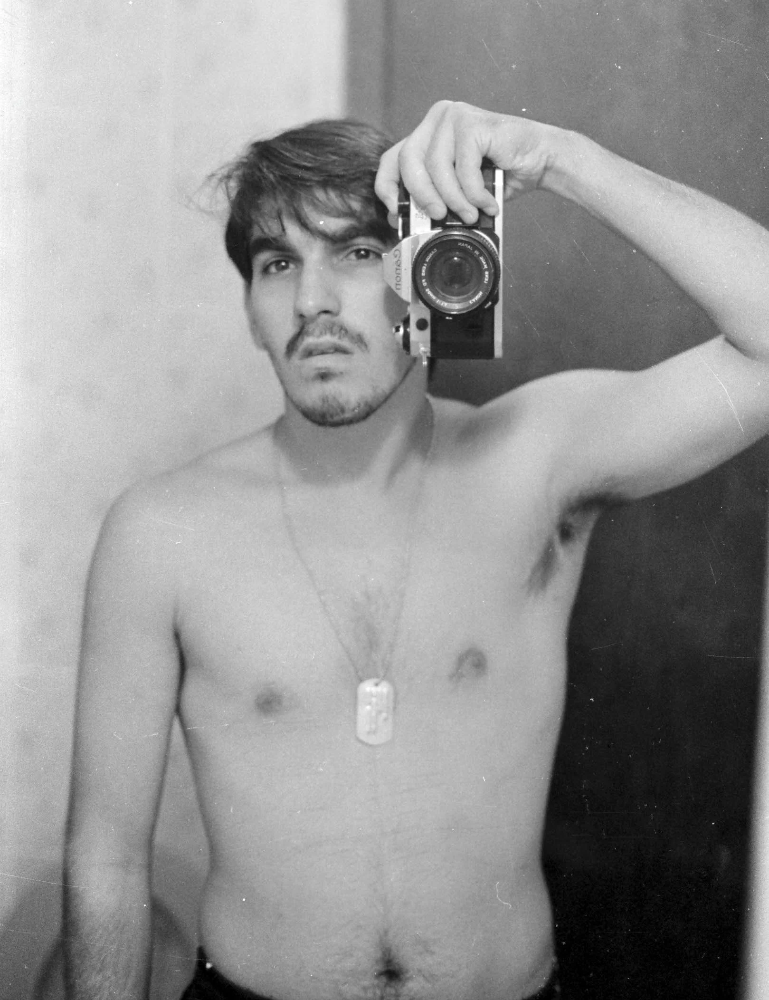

PHOTOGRAPHS, MEMORIES & A LITTLE PRETENSION
Olhar
pretensioso
01 / 04
07




THE PHOTOGRAPHIC INDEX
Keep looking.

Mirror Salvador, c. 1992
BEHIND THE GAZE
Marcelo
Kertész.
I’m still not sure whether I love photography or cameras more.
Photography runs in my family. My grandfather sent 16mm films from Brazil to his relatives in Hungary. My father always had a camera close by. At fifteen, I turned my bathroom in Salvador into a darkroom. Photography eventually led me to graphic design. The urge to look never left.
My mother taught me something else: photographs are meant to be lived with.
Say hello ↗Photographs and words adapted from Olhar Pretensioso / A Pretentious Gaze, 2021.